물리와 데이터로 건물을 이해하고, 운전을 개선합니다
건물과 설비의 물리적 특성을 운영 데이터와 결합해 에너지 성능을 예측하고 운전 특성을 해석합니다. Digital Twin에서 다양한 운전 전략을 학습·검증하고, 건물의 상태와 수요에 대응하는 자율운전 기술을 연구합니다.
Building Physics
운영 데이터로 물리 모델을 보정하고 파라미터를 최적화해 건물 부하와 설비 성능을 예측합니다.
Integrated Multiphysics Modeling
건물과 설비의 물리 모델을 통합하고 운영 데이터를 연계해, 상호작용과 운전 특성을 재현하는 Digital Twin을 구축합니다.
Digital Twin-Based Autonomous Control
Digital Twin에서 제어 에이전트를 학습하고 운전 전략과 제어 성능을 평가합니다.
연구 문제
기존 건물은 계측 항목과 운전 조건의 다양성이 제한되어, 수집된 데이터만으로 설비의 성능을 파악하기 어렵습니다. 건물자동제어시스템(BAS)과 건물에너지관리시스템(BEMS)의 운영 데이터를 물리 모델과 연결해 실내 온도, 건물 부하, 열원 에너지 소비량을 예측합니다.
연구 방법
공간의 열거동은 열저항·열용량(RC) 모델로, 열교환기와 코일의 성능은 설비 모델로 표현하고 공조기(AHU) 운영 데이터로 보정합니다. 부하 모델과 열교환기 모델의 파라미터를 함께 최적화해 물리적 일관성과 예측 정확도를 높입니다. 열전달과 에너지 수지 등 물리 관계를 바탕으로 예측 결과를 해석합니다.
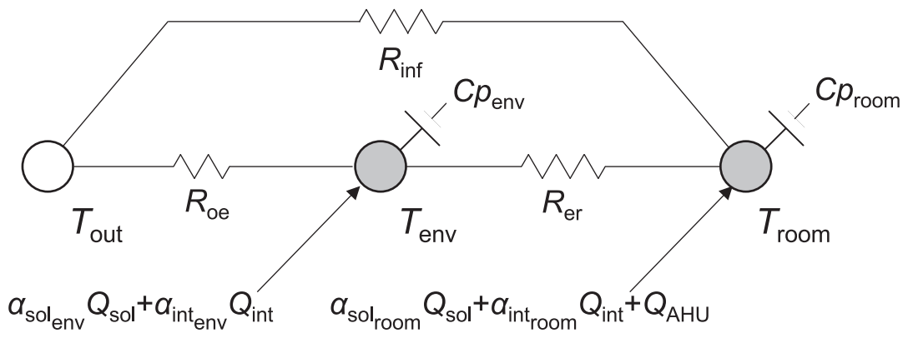
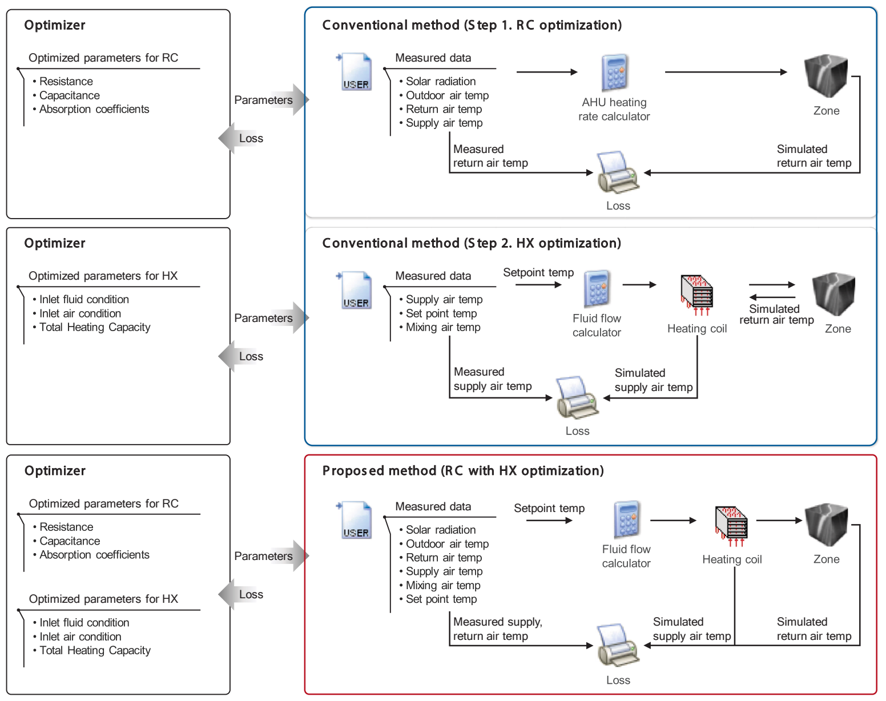
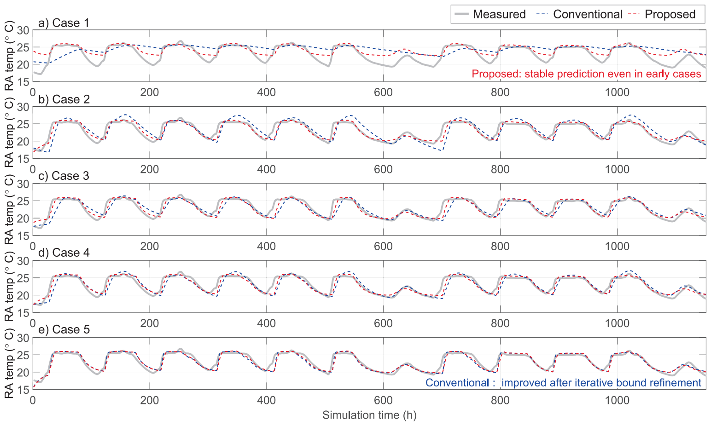
운영 데이터 기반 이상진단
BEMS 운영 데이터로 실내 온도가 쾌적 범위보다 낮아지는 과냉 현상을 진단합니다. 발생 시간대와 운전 조건에 따라 원인을 분류하고 운영 개선 지침을 도출하는 이상진단(FDD) 프레임워크를 실제 사무용 건물에 적용했습니다.
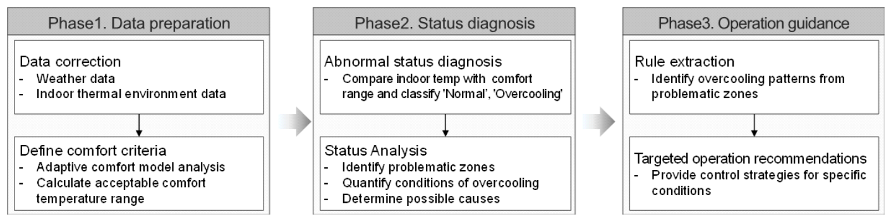
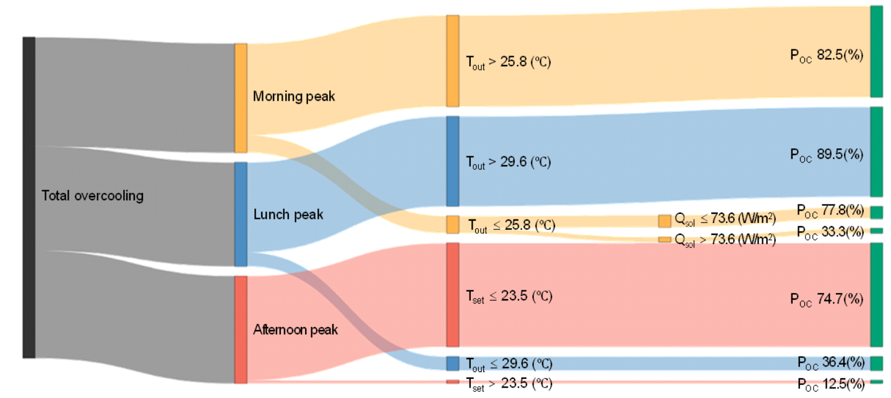
연구 문제
물리 모델은 실제 건물의 모든 특성을 재현하기 어렵고, 데이터 기반 모델은 학습하지 않은 운전 조건에서 예측 정확도가 낮아질 수 있습니다. 물리 모델과 운영 데이터를 결합해 제한된 데이터 환경에서도 예측 범위를 넓히는 Digital Twin을 연구합니다.
연구 방법
물리 시뮬레이션 결과를 신경망의 입력으로 제공하고 실측값과의 차이를 학습하는 하이브리드 모델(SINN, Simulation-Informed Neural Network)을 개발합니다. 물리 관계가 반영된 시뮬레이션과 운영 데이터를 함께 활용하고, 학습에 사용하지 않은 조건에서 예측 성능을 검증합니다. 건물·코일·축열조의 모델을 연계해 설비 간 상호작용을 재현하는 통합 시뮬레이션도 연구합니다.
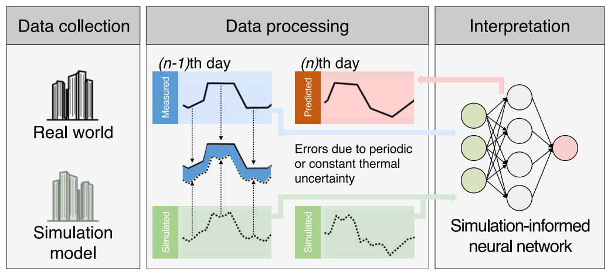
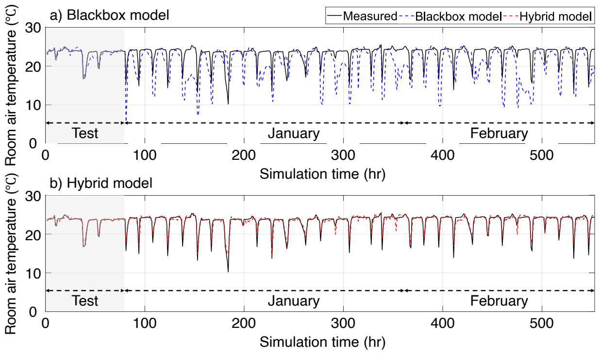
적용 사례: 냉방용 축열 시스템
히트펌프 연계 축열(TES) 시스템에서 냉수 온도를 필요 이상으로 낮게 유지하면 운전 효율이 떨어집니다. 상대습도·냉방 부하·냉각코일·축열조 방열 모델을 연계해 냉방 수요를 충족하는 최대 냉수 공급 온도를 산정합니다. 운영 데이터와 물리 모델로 공급 온도의 한계를 파악하고 일별 운전 조건에 맞는 축열 충전 온도를 결정합니다.
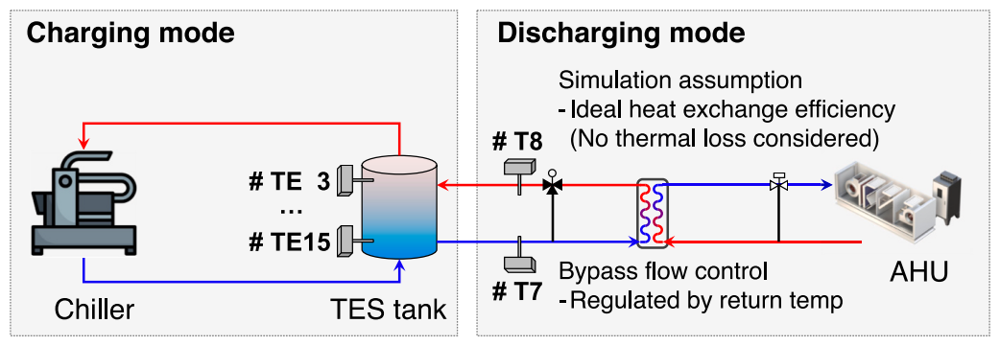
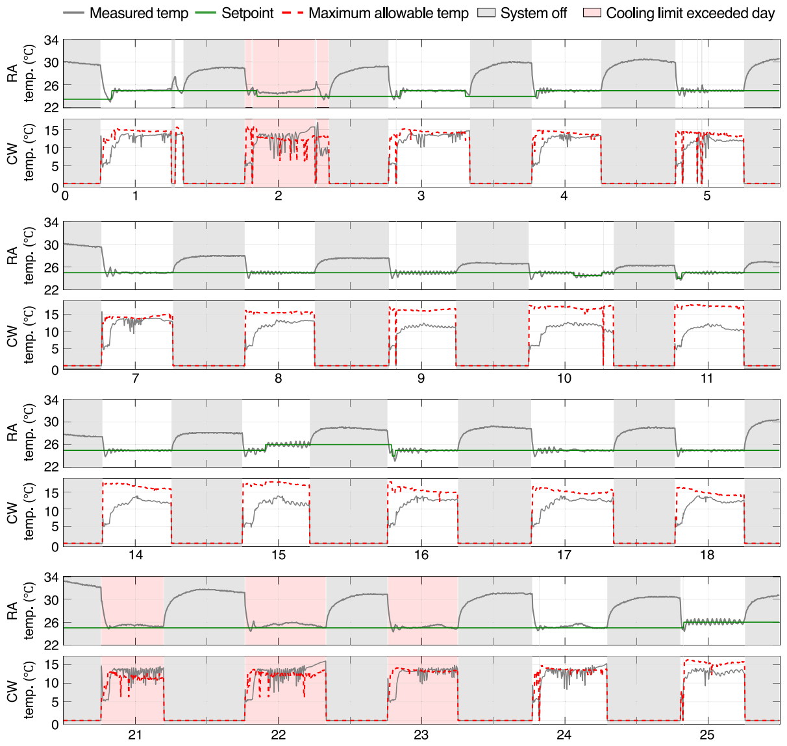
연구 문제
건물의 상태와 수요에 맞는 제어 의사결정을 하려면 다양한 운전 전략의 결과를 비교해야 합니다. 실제 건물에서는 실내 쾌적성과 설비 운전 제약 때문에 새로운 전략을 반복해서 시험하기 어렵고, 기존 운영 데이터에도 다양한 제어 조건이 충분히 담겨 있지 않습니다.
연구 방법
물리 시뮬레이션을 빠르게 재현하는 대리모델(Surrogate Model)과 하이브리드 모델을 Python 환경에 통합해 Digital Twin을 구축합니다. 이를 학습 환경으로 활용해 PPO 기반 다중 에이전트가 건물과 설비의 상태를 바탕으로 보일러 2대의 설정 온도·운전 신호와 공조기 운전 신호를 결정하도록 합니다. 제어값의 범위를 정하고 가스 소비량, 쾌적 범위 이탈, 보일러 운전시간 불균형을 보상함수에 반영해 운전 전략을 학습합니다.
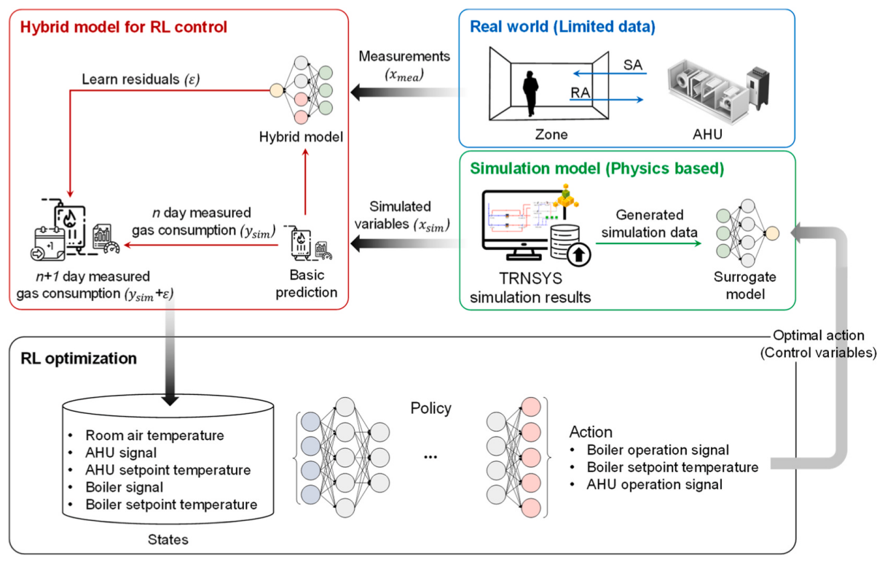
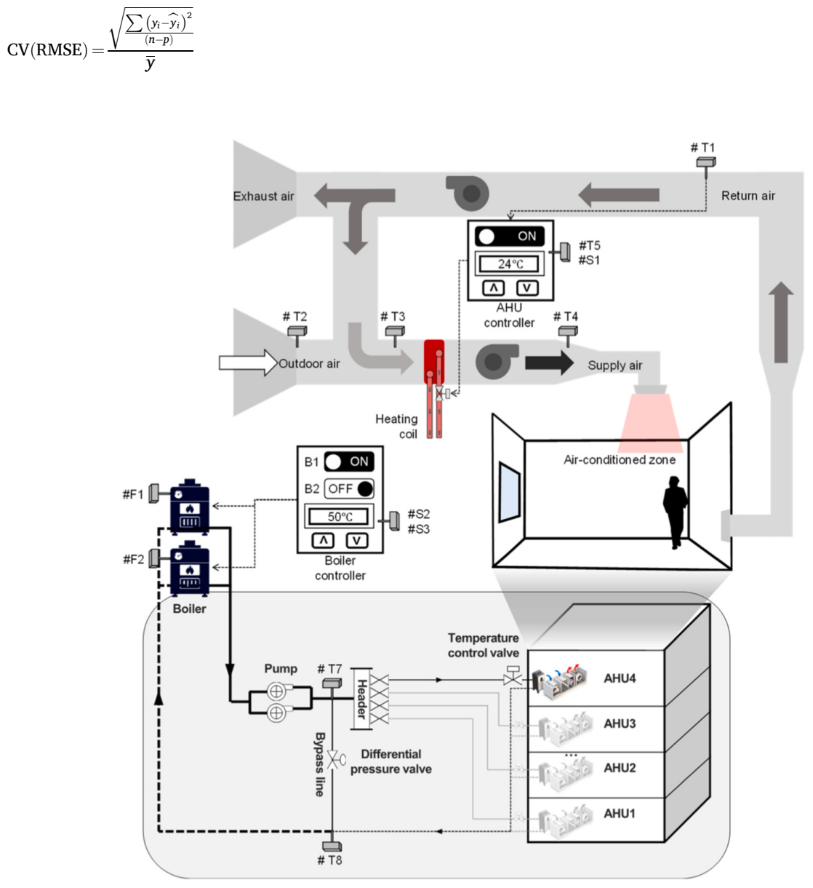
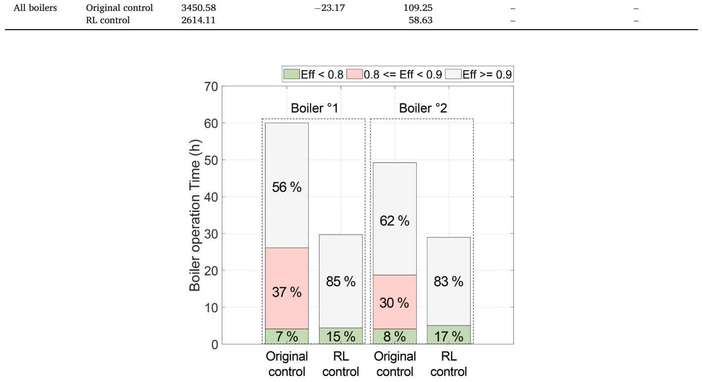
예측과 해석을 제어 의사결정으로 연결합니다
물리·데이터 융합으로 예측 범위를 넓히고, 물리 법칙과 인과관계로 운전 특성을 이해하며, 건물의 상태에 맞는 자율제어로 연결하는 연구를 이어갑니다.
예측의 확장과 물리 기반 해석
- 제한된 운영 데이터에서도 물리 관계를 활용해 학습 범위 밖의 예측 성능을 높이고자 합니다.
- 설비의 운전 및 에너지 사용 특성을 물리 법칙과 인과관계로 해석하는 방법을 연구합니다.
- 설비 성능의 변화를 감지하고 모델을 갱신하는 Digital Twin 자동 보정 체계를 개발하고자 합니다.
건물 상태에 따른 자율 의사결정
- 모델 예측 제어(MPC)와 강화학습을 활용해 에너지 효율, 실내 쾌적성, 설비 운전 제약을 함께 고려하는 운전 전략을 연구합니다.
- 수열에너지 과제 참여 경험을 바탕으로 히트펌프·축열·건물 부하를 연계한 운전 전략을 연구하고자 합니다.
- 개별 설비의 제어를 건물·건물군의 통합 운영으로 확장하고, 상태 판단부터 전략 결정·실행까지 연결하는 자율제어를 지향합니다.